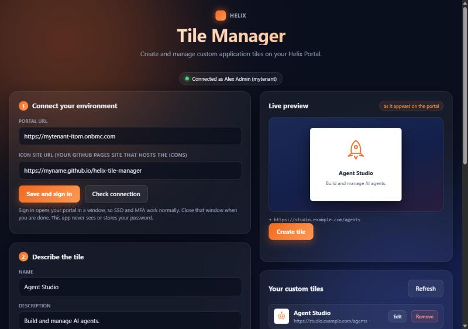

Live preview
See the tile exactly as it will look on the portal before you create it.
A small desktop app for Windows and macOS. Enter a name, a description and a link, pick an icon from 72 options, and your tile shows up on the portal for everyone.

See the tile exactly as it will look on the portal before you create it.
Line-art icons in Helix orange, searchable by name. No design work needed.
Your portal's own sign-in window opens, so SSO and MFA work. The app never sees your password.
List, edit and remove the custom tiles you created, all in one window.
List the Innovation Studio applications in your environment and use an app's Deployed Application URL for a tile in one click.
Use the button above for your computer. There is nothing to install on Windows: double-click the .exe. On macOS, open the .dmg and drag Helix Tile Manager to Applications.
The app is not code-signed yet, so your system asks you to confirm once.
xattr -cr "/Applications/Helix Tile Manager.app" in Terminal once.In Connect your environment, fill in Portal URL: the address of your Helix Portal, for example https://mytenant-itom.onbmc.com.
Click Save and sign in. Your portal opens in a window. Sign in as you normally do, then close that window. The status at the top turns green and shows who you are.
You need a portal role that can manage custom applications. Administrator works.
Enter the name, a short description and the destination URL the tile should open. Pick an icon, check the live preview, then click Create tile.
To link an Innovation Studio application, click Discover applications first. The app lists everything deployed in your environment. Choose Use URL on one and the name, description and Deployed Application URL fill in for you.
Open your Helix Portal home page and choose the Custom applications tab. Your tile is there, and it is visible to every portal user. Clicking it opens your destination URL in a new browser tab.
The Your custom tiles list shows everything you have created. Edit changes the name, description, link or icon, and the tile keeps its place and id. Remove deletes the tile for all users after you confirm.
Every icon is a plain SVG hosted on this site.
The portal only accepts a normal web address for a tile icon, not an embedded image, so the app points each tile at an icon hosted on this site. To host the icons yourself, enter your own site in Icon site URL under Pick an icon. It must serve the same files at icons/<name>.svg. Leave it empty to use this site.
The app never asks for a password. Sign-in happens in the portal's own page inside a separate window, the same as in a browser. The app stores only your two URLs on your computer and talks only to your portal.
Everyone who uses that portal. Remove a tile from the app if you only wanted to test.
Click Save and sign in again. Portal sessions time out, and the app has to use a current one.
Your portal user needs a role that can manage custom applications, such as Administrator. Ask your portal admin.
If you set an Icon site URL, check that it is correct and that the site is online, or clear the field to use this site. Then edit the tile and pick the icon again to refresh it.